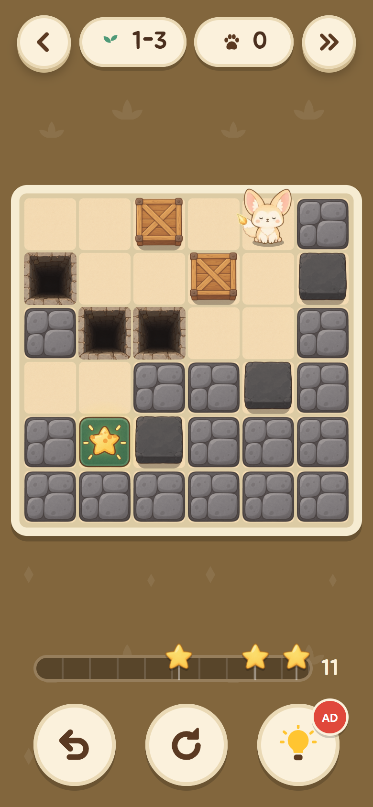
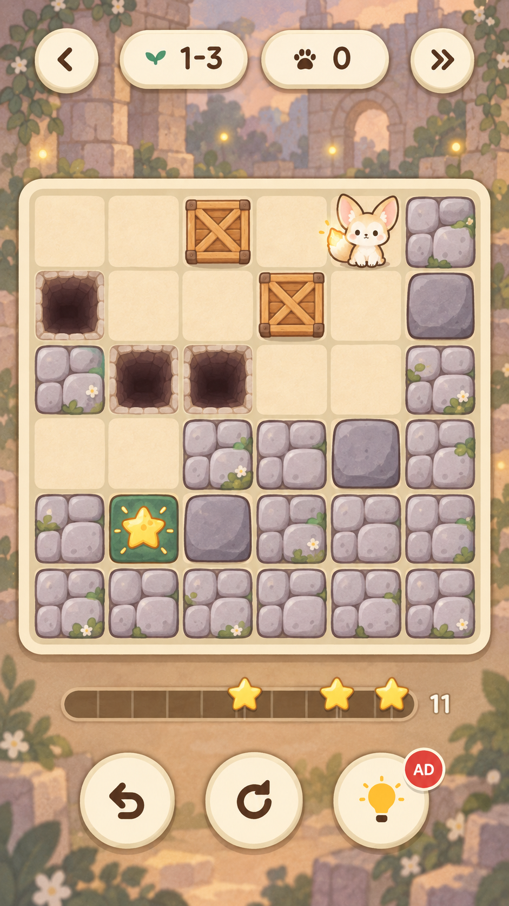
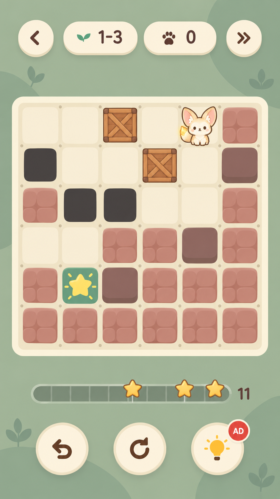
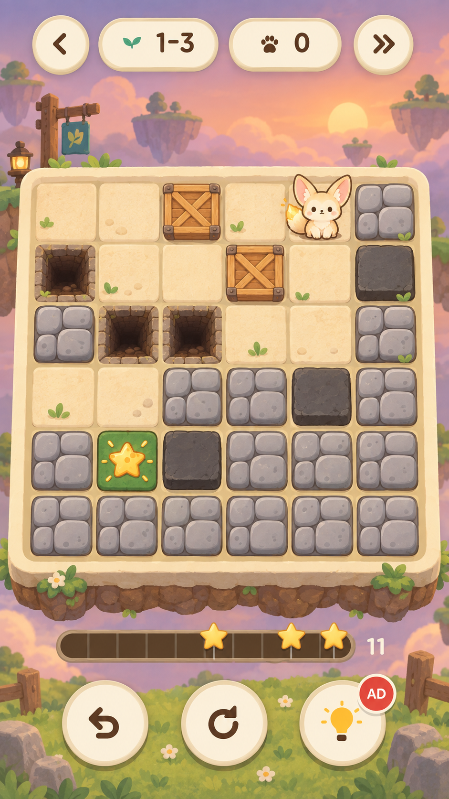
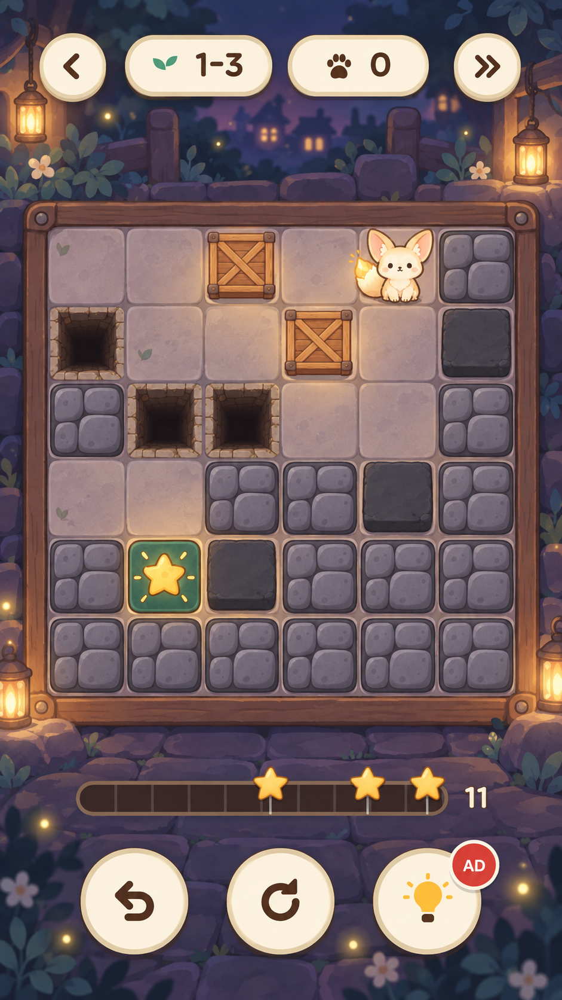

인게임 톤 시안
플레이 화면의 구성(위쪽 알약, 판, 이동 막대, 아래 버튼 셋)은 그대로 두고, 판 안의 벽·블록·구덩이·바닥과 배경의 그림 톤만 여우에 맞춘 시안입니다. 같은 스테이지(1-3)를 네 방향으로 그렸습니다. 게임에는 아직 넣지 않았습니다. 그림을 누르면 크게 보입니다.
지금 화면에서 여우와 어긋나는 점
- 벽과 고정 블록이 짙은 회색·검정이라 판에서 가장 무겁고, 크림색 여우와 명도 차이가 크다.
- 벽은 돌 결과 음영이 들어가 입체적인데, 여우는 납작한 파스텔에 갈색 외곽선이다.
- 구덩이가 새까만 사각형이라 그림책 느낌과 따로 논다.
- 배경이 던전 색 한 가지 민무늬라 판만 떠 있는 느낌이다.
상용 게임은 어떻게 맞추나
| 방식 | 참고 게임 | 특징 | 시안 |
|---|---|---|---|
| 캐릭터와 같은 외곽선·채색으로 전부 그린다 | 포켓몬 카페 리믹스, 고양이와 스프 | 캐릭터, 소품, 배경이 같은 갈색 선과 수채풍 파스텔을 쓴다. 가장 따뜻하고 한 장의 그림책처럼 보인다. 그릴 것이 많고, 판이 배경에 묻히지 않게 명도를 관리해야 한다. | A |
| 배경과 고정물은 단순하게, 움직이는 것만 또렷하게 | A Good Snowman Is Hard to Build, Two Dots | 질감을 빼고 색 면만 쓴다. 밀 수 있는 것과 캐릭터에만 선을 줘서 퍼즐이 가장 잘 읽힌다. 던전마다의 분위기는 색으로만 낸다. | B |
| 판을 작은 디오라마(장난감)로 만든다 | 동물의 숲 포켓 캠프, 캡틴 토드 | 벽과 블록에 두께를 주고 판 자체를 손에 올린 모형처럼 보이게 한다. 아기자기하지만 위에서 본 격자와 두께 표현이 부딪히지 않게 해야 한다. | C |
| 어두운 저녁빛에 캐릭터의 빛으로 대비를 준다 | 고양이와 스프의 밤 장면 | 바닥과 벽을 어둡고 차분하게 두고 캐릭터와 빛나는 것만 밝힌다. "빛을 되찾는다"는 설정과 맞고 여우가 가장 눈에 띈다. 전체가 어두워 오래 보면 답답할 수 있다. | D |
위 표는 알고 있는 내용을 정리한 것이고, 이번에 각 게임의 화면을 다시 확인하지는 않았습니다.
시안










고른 뒤에 하는 일
- 시안은 화면 한 장을 통째로 그린 그림입니다. 실제로는 그 톤으로 벽, 고정 블록, 상자, 구덩이, 바닥, 출구와 던전 여덟 곳의 기믹 타일(빙판, 마법진, 스위치와 문, 무너지는 바닥 등), 블록 종류를 낱장으로 다시 그립니다.
- 배경은 던전마다 색이나 그림을 달리합니다.
- 두 시안을 섞을 수도 있습니다(예: A의 벽과 B의 배경).